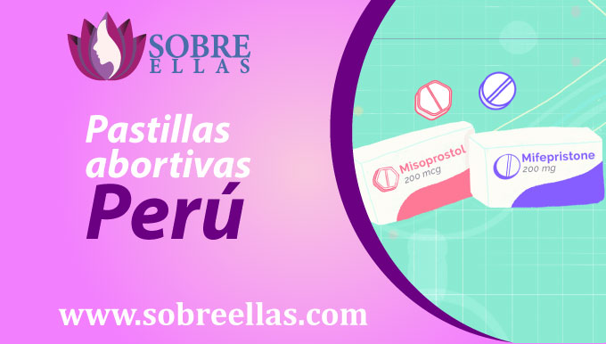
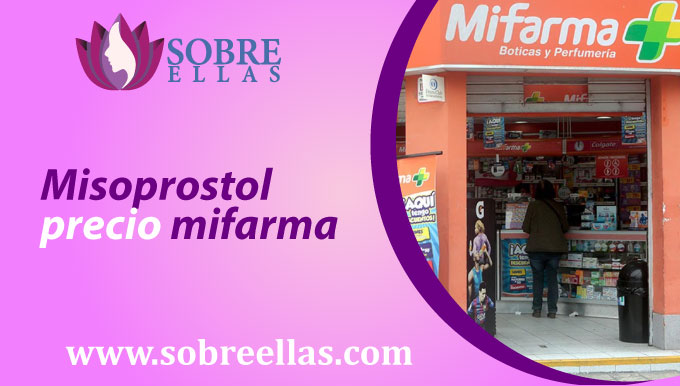

Misoprostol Perú
-
addContenido
Hoy en día en el Perú existen diversos métodos abortivos disponibles en pastillas, como el uso de misoprostol. El misoprostol es un medicamento que se usa para terminar el embarazo temprano. A menudo en combinación con otros medicamentos, como la mifepristona, para realizar un trabajo más completo. Es importante tener en cuenta que el misoprostol no es un medicamento que induce el aborto. Más bien, es un medicamento que ayuda a terminar el embarazo temprano.
Pastillas abortivas Perú
Las pastillas abortivas están disponibles en Perú, en diferentes dosis y formas. Algunas de las píldoras abortivas son la mifepristona y el misoprostol. La mifepristona es un medicamento que se usa para interrumpir un embarazo. El misoprostol es un medicamento que se usa para inducir el parto y ayudar a dar a luz a un bebé. Ambas pastillas abortivas que ya se encuentran en venta en Perú también están disponibles en diferentes formas. Algunas de las formas de las pastillas son las tabletas y cápsulas. Otras formas de las pastillas abortivas que están disponibles son en forma de inyecciones. Este medio de aborto farmacologico se realiza en diferentes dosis.Todo dependera de la receta que te indique el doctor a cargo de tu proceso abortivo, a tu tiempo de gestacion y a tu estado de salud.
Misoprostol lima
Lima es el centro de la ciudad y donde se realiza la comercialización y venta de diversos productos, entre ellos no existe la excepción de productos que hasta el momento no han sido legalizados en nuestro país, pero en otros si. El misoprostol es un compuesto farmacológico que sirve para realizar diversas intervenciones abortivas. Si necesitas adquirir asesoría para la compra de estas pastillas abortivas misoprostol, puedes contactarnos por esta pagina y nuestro médico especialista se pondrá en contacto contigo
Misoprostol precio en Farmacias
Si está buscando una pastilla abortiva efectiva, de forma rápida y segura , el misoprostol podría ser la opción para usted. Está disponible sin receta en la mayoría de las farmacias y se puede usar para interrumpir un embarazo hasta las ocho semanas de gestación aproximadamente. El misoprostol es un medicamento utilizado para inducir el parto y luego abortar un embarazo. Se vende bajo la marca Cytotec y también está disponible en forma genérica. En el Perú encontrarás variedad de precios tanto de forma online como presencial . Si decides optar por la primera forma para adquirirlo, deberás presentarte con tu receta médica donde figura la aprobación del especialista que te está atendiendo. Pero si aún eres menor de edad o no cuentas con esta receta , puedes adquirirla por medio online de forma más efectiva.
Misoprostol precio mifarma
MisoProstol puede ser la pastilla abortiva más eficaz y asequible para poner fin a un embarazo en el mercado peruano y a nivel mundial. El misoprostol es un medicamento que se usa para inducir el parto. También se utiliza para tratar los calambres y la diarrea. En mifarma una farmacia en Peru, está disponible si presentas tu receta médica en forma genérica como de marca. La forma genérica suele ser menos costosa que la forma de marca. Lo puedes encontrar como pastilla abortiva sola o también está disponible en forma de píldora combinada con mifepristona. La decisión de usarla de manera individual o combinada dependerá de lo que te ordene tu especialista para evitar algún riesgo durante el proceso abortivo.
Misoprostol comprar
La preocupación de haberte enterado que estas embaraza en un momento que no esperabas dentro de tus planes, te desespera y no sabes a donde acudir o qué hacer para no ser madre. Si ya tomaste tu decisión y estás en busca de métodos abortivos más eficaces y menos riesgosos, lo recomendable es el uso farmacológico para abortar. Estas pastillas abortivas podrás adquirirlas en cualquier centro o farmacia de salud con solo presentar tu receta médica, en caso no cuentes con ella, puedes ponerte en contacto con nosotros mediante nuestra página, para que te ayudemos sin necesidad de tener que solicitarla.
Aborto Farmacologico
El aborto farmacologico o con medicamentos, es un procedimiento utilizado para interrumpir un embarazo. Es seguro y efectivo cuando lo realiza un proveedor de atención médica calificado, porque si obtienes pastillas que no son de calidad, ni cuentan con fecha o marca de laboratorio, podría terminar mal. El aborto con pastillas es diferente de otros tipos de aborto. Es un proceso que utiliza medicamentos para poner fin a un embarazo. Los medicamentos funcionan para sacar al feto del útero. No es invasivo a diferencia de otros procesos, así que no tienes riesgo a contagiarse por los instrumentos que utilicen, etc. Este proceso lo puedes realizar desde la comodidad de tu casa , con supervisión medica presencial o de forma remoto.
Ergotrate precio Perú
Al hablar de ergotrate, podemos verlo desde distintos puntos de vista y diversos significados. El primero y más conocido, es que se le considera un es un nuevo y revolucionario suplemento de pérdida de peso que se está convirtiendo rápidamente en uno de los favoritos de las personas de todo el mundo. Este producto se compone de ingredientes naturales que están diseñados para ayudarle a perder peso y mejorar su salud en general. Gracias a sus ingredientes ayuda a reducir sus niveles de colesterol y mejorar la salud de su corazón. Este producto es perfecto para las personas que buscan una forma natural de perder peso, y también es perfecto para las personas que buscan una manera de mejorar su salud en general. Si usted está buscando un suplemento de pérdida de peso que sea eficaz y seguro, entonces usted debe considerar el uso de ergotrate. El ergotrate es perfecto para personas de todas las edades, y se está convirtiendo rápidamente en uno de los favoritos de personas de todo el mundo. El segundo motivo por el que se ha vuelto muy conocido, es debido a su uso para disminuir el sangrado que viene del útero, generando contracción en el utero de forma intensa y constricción de los vasos sanguíneos, lo cual detiene de forma eficiente los sangrados.
Tome misoprostol y no sangre
Existen casos muy poco comunes en los que se presenta esta situación y en donde se tendría que descartar muchos factores previos para tener una conclusión específica. El primero es saber si la paciente, anteriormente ya se ha realizado algun tipo de aborto de este tipo, porque a medida que se realizan mas y mas, el cuerpo reacciona haciendo mas largo este proceso. Segundo, se tendría que entender, no todos los cuerpos son iguales, por lo tanto no reaccionan de la misma forma. Tercero, tener en cuenta también que una de las funciones principales del misoprostol en nuestro cuerpo y que mucho desconoces, es su actuar como bloqueo de la acción de las prostaglandinas, que son sustancias químicas que ayudan a reducir la cantidad de sangre que fluye en las venas. En cualquiera de esos casos, se tendría que informar al médico encargado de tu proceso, ni bien pase el límite de tiempo establecido y si no notas cambios, que sea posible actuar dentro del tiempo para una solución que ayude a completar el aborto de forma segura.
Aborto Incompleto Sintomas
Existe una variedad de síntomas que pueden presentarse después de un aborto incompleto, tanto conocidos como desconocidos. El síntoma más común de aborto incompleto son los calambres. Esto ocurre en aproximadamente la mitad de las mujeres que presentan un aborto. Los calambres pueden ser leves o graves y pueden durar horas o días. Otros síntomas de aborto incompleto incluyen flujo vaginal, náuseas y vómitos. Enotros casos, el aborto incompleto puede causar un aborto espontáneo. Algunos de los síntomas desconocidos que pueden ocurrir después de un aborto pueden incluir:
1. Infecciones . Luego de realizarte un aborto, es importante tomar medidas necesarias para evitar cualquier infección. Esto incluye evitar la actividad sexual hasta que todo el proceso haya terminado, tu dejes de sangrar y sientas que tu cuerpo ya está recuperado por completo. Lo ideal es realizar actividades o guardar reposo según lo que te indique el especialista y tomar antibióticos según lo prescrito.
2. Sangrado excesivo. Si experimenta sangrado excesivo, mayor a que el médico te indico previo al proceso, es importante acudir a una revisión médica lo antes posible. Ya que podría ser una alarma indicativa de una complicación y puede requerir antibióticos de mayor efecto o cirugía.
3. Muerte. Aunque poco comun, la muerte puede presentarse después de un aborto y es una de las muchas cosas que hacen desanimar a toda chica al escuchar la palabra aborto. Y no, aborto no es sinonimo de muerte, todo dependera del especialista que lleve tu caso, de la informacion y obediencia al pie de la letra que recibas, de la realizacion del proceso, de tu estado actual de salud, del tiempo de gestacion con el que cuentes, del cuidado pre, durante y despues que le des a tu cuerpo.
Si aún así llegas a experimentar algún signo o síntoma que sugiera que puede estar experimentando una emergencia médica, vaya al hospital.
¿El misoprostol es una píldora abortiva?
No, el misoprostol no es una píldora abortiva. Es un medicamento que se utiliza para interrumpir un embarazo. Es un análogo de la prostaglandina y en algunos casos se utiliza en combinación con mifepristona (anteriormente conocida como RU-486) para interrumpir un embarazo. Esta pastilla abortiva también se usa para tratar úlceras gástricas y otras afecciones.
¿El misoprostol es seguro de usar?
Sí, el misoprostol es generalmente seguro de usar. El misoprostol es seguro de usar en mujeres que desean interrumpir un embarazo.Sin embargo, como cualquier medicamento, hay posibles efectos secundarios que pueden ocurrir y existen algunas cosas importantes que debes tener en cuenta si elige usar este medicamento. En primer lugar, el misoprostol puede causar efectos secundarios. Estos efectos secundarios pueden variar dependiendo de la persona, pero generalmente pueden incluir náuseas, vómitos, diarrea, calambres y fiebre. En segundo lugar, una vez que se toma este medicamento, deberá tomarse en 3 repetidas veces para que complete el efecto deseado. Finalmente, la pastilla abortiva misoprostol no siempre funciona tan bien como debería. Si no termina su embarazo dentro de las 24 horas después de tomar las pastillas, es posible que deba tomar otra dosis de misoprostol para inducir el parto. El misoprostol es un medicamento seguro y efectivo para interrumpir un embarazo. Si está considerando usarlos, asegúrese de discutir los riesgos y beneficios con su médico.
¿El misoprostol está aprobado por la FDA?
Si, el misoprostol está aprobado por la FDA como un medicamento que se usa para tratar las úlceras estomacales y otras afecciones. También se utiliza para abortar un embarazo.El misoprostol está disponible como un comprimido y un líquido. La forma de tableta generalmente se toma por vía oral. La forma líquida puede inyectarse en la vena, tomarse por vía oral o inyectarse en el músculo. Hay varias maneras de usar misoprostol para interrumpir un embarazo. La forma más común es tomar misoprostol por vía oral (por vía oral). También puede inyectar misoprostol por vía vaginal (en la vagina). También puede usar una jeringa para inyectar misoprostol en el recto. Sin embargo, como cualquier medicamento, existen varios riesgos y efectos secundarios asociados con el uso de misoprostol para interrumpir un embarazo. Los riesgos más comunes son que el aborto no tendrá éxito y que la mujer puede experimentar efectos secundarios graves. Por lo tanto, es importante hablar con un médico antes de usar misoprostol para interrumpir un embarazo, ya que él evaluará la dosis adecuada y necesaria para el tiempo de embarazo que tengas.
Efectos Secundarios del Misoprostol
Algunos de los riesgos y efectos secundarios más comunes del uso de misoprostol para interrumpir un embarazo son los siguientes:
- El aborto puede no tener éxito.
- Fiebre
- Dolor Abdominal
- Una sensación de desapego emocional
- Náuseas y vómitos
- Diarrea
- Dolor de cabeza
- Dolor en la parte baja de la espalda
- Sangrado de la vagina
- Dolor intenso después del aborto